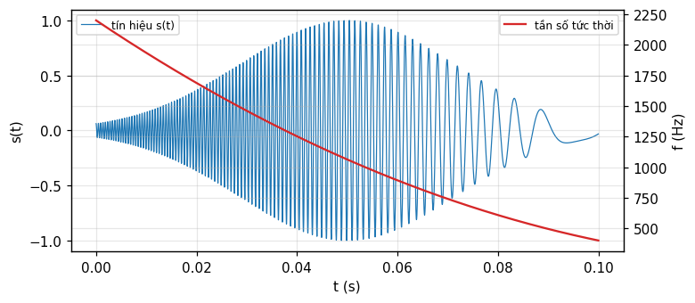
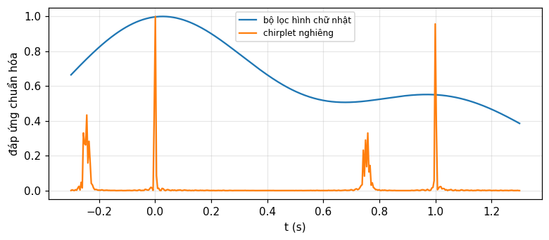
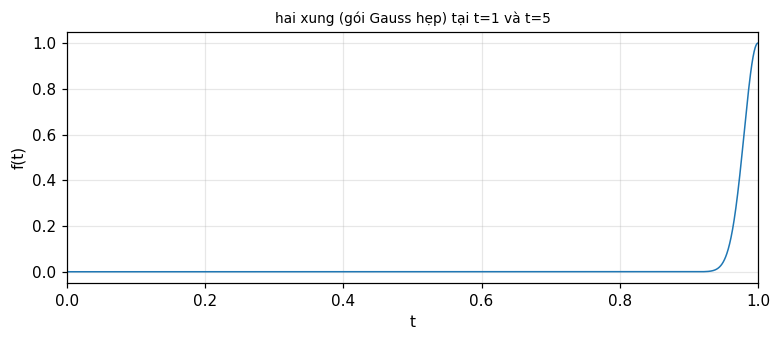

Phổ công suất động, biến đổi wavelet và phân bố Wigner
Vì sao phổ tĩnh mất thông tin thời điểm, ô Gabor và giới hạn bất định, dãy lọc chia tần số và chia thời gian, định lý tương đương, biến đổi wavelet và chirplet, phân bố Wigner (Bracewell, chương 19).
Bài giảng (slide) Thực hành với Jupyter Notebook Quiz tự kiểm tra
Bài giảng (slide)
Phổ công suất động, biến đổi wavelet và phân bố Wigner
- Giải thích vì sao phổ (công suất) tĩnh không mang thông tin về thời điểm, và thông tin đó nằm ở pha các hệ số.
- Dùng khái niệm ô Gabor trên mặt phẳng (t,f), diện tích tối thiểu của ô theo quan hệ bất định thời gian-tần số.
- Tính phổ động bằng hai đường: chia tần số (dãy lọc băng thông không đổi hay Q không đổi) và chia thời gian (cửa sổ Gauss trượt), và chứng minh định lý tương đương giữa chúng.
- Định nghĩa biến đổi wavelet bằng giãn nở và tịnh tiến của một wavelet cơ bản, chuẩn hóa |a|^{-1/2} giữ nội dung bình phương; nhận biết chirplet như ô diện tích tối thiểu nghiêng.
- Tính và diễn giải phân bố Wigner: các ví dụ chuẩn (xung, chirp, sóng cosin, hai xung), phép nghịch đảo, và các hình chiếu cho lại phổ công suất theo thời gian và theo tần số.
Dùng nút, chấm tròn hoặc phím ← → để chuyển slide.
Vì sao cần phổ động: ô Gabor và bất định
- Phổ tĩnh không giữ thông tin thời điểm
- Tai người và bản chất thích ứng
- Ô Gabor và giới hạn diện tích
Chuyện dây đàn được gảy khi nào
Có thể biểu diễn một dạng sóng phức tạp, chẳng hạn micro thu một đoạn nhạc, bằng chuỗi Fourier, hay phổ, và có thể khẳng định mọi chi tiết tinh vi trong đoạn nhạc gốc, kể cả tiếng gảy pizzicato ngắn nhất, đều được nắm bắt trong phổ: phổ hoàn toàn tương đương dạng sóng. Nhưng sẽ khó chỉ ra trong biến đổi đặc điểm nào ứng với việc gảy dây; và nếu tìm được đặc điểm đó, cũng khó nói, chỉ nhìn vào phổ, dây đàn được gảy vào lúc nào. Đó là vì các hệ số chuỗi Fourier là hằng số, không phụ thuộc thời gian (Bracewell, tr. 489).
Thông tin thời điểm nằm ở đâu
Nếu chỉ có phổ công suất thì không thể nói dây được gảy khi nào, vì phổ công suất không phụ thuộc vào chọn gốc thời gian và không đổi nếu một số hài bị dịch theo thời gian so với các hài khác. Suy ra thông tin thời điểm phải được mã hóa trong pha của các hệ số phức phân bố quanh tần số tự nhiên của dây (196 Hz nếu dây Sol được gảy). Riêng pha của hệ số 196 Hz thôi thì không đủ, vì pha đó tương thích với dịch thời gian bất kỳ số nguyên chu kỳ tự nhiên (Bracewell, tr. 489). Số đo: hai tín hiệu \cos(2\pi\cdot196t) và \cos(2\pi\cdot196(t-1/196)) có cùng pha tại hệ số 196 Hz (lệch pha 1e-15 rad, bội của 2\pi), dù dịch đúng một chu kỳ.
Tai người: bộ lọc thích ứng, không phải một biến đổi trọn đời
Tai được trang bị để phân tích âm thanh hiệu quả thành dải tần số nhờ hàng nghìn tế bào lông linh hoạt kích cỡ khác nhau, kích thích bởi ống dẫn sóng chất lỏng côn (ốc tai). Nhưng tai không chỉ thực hiện phân tích Fourier; chức năng của các xử lý phía sau tai là trích xuất thông tin trong khi âm nhạc đang diễn ra. Bộ lọc phân tích tần số của tai liên tục cho ra các đầu ra riêng lẻ thay đổi, từ đó ta dựng nên ấn tượng về hành động đã tạo ra âm thanh. Tai chú ý hiệu quả tới tín hiệu trong các khoảng thời gian ngắn liên tiếp: khi cần độ phân giải tần số cao (như nghệ sĩ vĩ cầm giữ một nốt dài để khớp chuẩn 440 Hz của kèn ô-boa), các đoạn thời gian dài tự động được chú ý; khi cần độ phân giải thời gian cao (như nhận diện phụ âm bật hơi), sự chú ý chuyển sang đoạn ngắn hơn — thay đổi thích ứng khi tín hiệu trôi qua (Bracewell, tr. 489 đến 490).
Ký hiệu âm nhạc là một phổ động sơ khai
Ký hiệu âm nhạc gợi ý rất đúng cảm nhận cao độ và thời lượng mà người nghe trải nghiệm. Các nốt cao độ cao nằm cao trên khuông nhạc, còn thời gian trôi từ trái sang phải. Một phổ đồ động (dynamic spectrogram) thừa hưởng hai đặc điểm này của ký hiệu âm nhạc. Để mô tả một phổ phát triển theo thời gian đòi hỏi sự thỏa hiệp giữa độ phân giải phổ và thời gian, liên hệ với nguyên lý bất định của cơ học lượng tử, một quan hệ được Dennis Gabor (1900 đến 1979) nhấn mạnh đầu tiên (Gabor, 1946), cha đẻ của kỹ thuật toàn ký (holography). Độ phân giải phổ tinh cần các lát thời gian dài hơn; độ phân giải thời gian tinh có từ các đoạn ngắn, và do đó chấp nhận độ phân giải tần số thấp hơn (Bracewell, tr. 490).
Chia mặt phẳng (t,f) thành các ô
Các trình bày tính toán của tiếng chim, tiếng nói (Rabiner và Schafer, 1978), và nhiều hiện tượng địa vật lý thường dựa trên việc chia tín hiệu thời gian thành các đoạn bằng nhau ngắn, mỗi đoạn phân tích Fourier thành hệ số phức. Trên mỗi đoạn của trục f, các ô được xếp chồng theo chiều dọc chứa các hệ số (hình 19.1, tr. 490). Chiều cao ô (hay băng thông) tỉ lệ nghịch với chiều rộng ô (hay thời lượng) theo quan hệ bất định; do đó hình dạng ô, hay tỉ lệ khung, giống nhau trên toàn bản trình bày đã tính. Tuy nhiên tỉ lệ khung sẽ khác nếu chọn đoạn ngắn hơn để không làm nhòe các quá độ ngắn, hoặc ngược lại đoạn dài hơn để có phân biệt tần số tốt hơn. Số đo: với \Delta t=0.01 s và \Delta f=100 Hz, diện tích ô \Delta t\cdot\Delta f = 1, đúng bằng giới hạn dưới của tích bất định cho một cửa sổ Gauss.
Ví dụ trực quan: sét và tiếng huýt
Hình 19.2 (tr. 491) cho một phổ động của hiện tượng tự nhiên trong dải VLF, ghi tại trạm Palmer ở Nam Cực, gồm các tia sét (vệt dọc) và các tiếng huýt (whistlers) — tín hiệu sét bị phân tán khi lan truyền qua không gian nhiều lần bán kính Trái Đất trước khi quay lại. Nhiều đặc điểm có ý nghĩa vật lý sẽ không hiện ra nếu chỉ có bản ghi dạng sóng gốc theo thời gian (Bracewell, tr. 491). Hình 19.3 cho một bản in giọng nói của \"bait beat bite boat boot\": các nguyên âm có thời lượng khoảng một phần ba giây với nhiều hài mạnh; các phụ âm ngắn và trải rộng băng thông; có thể thấy tiếng ù liên tục ở 60, 120, 180, 240 Hz với điều biến biên độ liên quan tới giọng nói (tr. 492).
Sự thỏa hiệp: rõ tần số hay rõ thời gian
Nếu chọn đoạn dài, mỗi biến đổi Fourier phân giải tốt các tần số gần nhau nhưng không thể nói chính xác quá độ xảy ra khi nào trong đoạn đó; nếu chọn đoạn ngắn, quá độ được định vị chính xác theo thời gian nhưng các tần số gần nhau hòa lẫn vào nhau. Đây chính là nội dung của quan hệ bất định áp cho tín hiệu: một cửa sổ hẹp trong t cho biến đổi rộng trong f, và ngược lại (đã gặp dưới dạng độ rộng tương đương ở module 6). Số đo: cửa sổ Gauss \Delta t=0.005 s có biến đổi tương đương \Delta f = 200 Hz; cửa sổ \Delta t=0.02 s cho \Delta f = 50 Hz: gấp bốn lần thời gian, giảm đúng bốn lần tần số, tích không đổi bằng 1.
Tự kiểm tra phần 1
- Vì sao phổ công suất không cho biết thời điểm dây đàn được gảy?
- Tai người phân tích âm thanh theo cách nào khác với một biến đổi Fourier duy nhất?
- Diện tích ô Gabor tối thiểu bị giới hạn bởi điều gì?
Gợi ý: vì nó không phụ thuộc gốc thời gian; theo các đoạn ngắn liên tiếp, thích ứng theo tín hiệu; quan hệ bất định thời gian-tần số \Delta t\Delta f\ge1.
Chia tần số: dãy lọc băng thông không đổi và Q không đổi
- Dãy lọc thông dải
- Băng thông không đổi so với Q không đổi
- Tính toán: chập, chồng phổ, hai cách biến đổi
Cấu trúc thiết bị: khuếch đại, chia, dãy lọc
Phổ động như vậy có được từ thiết bị hoạt động về nguyên tắc như hình 19.4 (tr. 492): dạng sóng tín hiệu s(t) cần phân tích được khuếch đại, chia thành N đường (tuần tự hoặc đồng thời), và cùng s(t) được đưa vào dãy N bộ lọc thông dải tâm tại các tần số f_j cách đều phù hợp, phủ dải mong muốn. Các tần số tâm cách đều và mọi bộ lọc có cùng băng thông, như biểu diễn bằng đặc tính lọc vẽ trên trục tần số ngoài cùng bên trái. Đầu ra mỗi bộ lọc dao động gần tần số tâm phù hợp với bộ lọc đó, với biên độ và pha biến thiên theo thời gian phù hợp nội dung tín hiệu trong băng của nó khi thời gian trôi qua. Mỗi tín hiệu ra được chỉnh lưu và làm mượt, kết quả được ghi lại (tr. 492 đến 493).
Ví dụ định lượng: tín hiệu trượt tần số
Hình 19.5 (tr. 494) minh họa bằng ví dụ nhân tạo: tín hiệu E(t)\cos[2\pi(\alpha t+\tfrac12\beta t^2+\tfrac16\gamma t^3)], với E(t) là bao hình tăng rồi giảm, \alpha=2200 Hz là tần số đầu tại t=0. Đạo hàm pha (tính bằng chu kỳ) theo t cho tần số tức thời f_{\text{tt}}=\alpha+\beta t+\gamma t^2. Hình dùng \beta=-27\,500 Hz/s cho tốc độ trôi; số hạng \gamma=95\,000 Hz/s² đưa thêm độ cong vào đường trôi (Bracewell, tr. 493). Số đo: f_{\text{tt}}(0) = 2200 Hz, f_{\text{tt}}(0.05) = 1062.5 Hz, f_{\text{tt}}(0.1) = 400 Hz, khớp công thức bậc hai.

Phổ tĩnh của tín hiệu trượt: nhòe và mất tính trôi
Phổ công suất của tín hiệu, vẽ theo trục tần số, trải từ khoảng 500 Hz tới 2200 Hz, hơi lệch, và như đã nói, không truyền tải được đặc tính trôi của tín hiệu. Nếu có pha phổ, hay biến đổi Hartley H(f), thì nghịch đảo được. Mỗi bộ lọc có băng thông tương đương 100 Hz; do đó bao hình các đầu ra lọc đều có cùng độ rộng tương đương (0.01 s). Tần số sóng mang khớp với các tần số tâm đọc từ trục tần số. Để minh họa các tần số tâm cách nhau 200 Hz, gấp đôi băng thông, nhưng thực tế cách nhau một băng thông sẽ hợp lý hơn (tr. 493). Số đo: phổ công suất số của tín hiệu trượt tại f=1350 Hz (giữa dải) so với tại f=2200 Hz (đầu dải): tỉ số công suất 422.15, không cho manh mối nào về trình tự thời gian trôi tần số.
Băng thông không đổi so với \log f (Q không đổi)
Với tần số tâm cách đều, băng thông bộ lọc không đổi, không phụ thuộc tần số; mỗi bộ lọc băng thông không đổi như vậy đáp ứng một xung đến bằng cách dao động quanh tần số giữa băng của nó, điều biến bởi một bao hình cùng thời lượng cho mọi bộ lọc. Với tần số cách đều theo \log f thay vì f, băng thông (tính bằng hertz) tăng tỉ lệ f_j; đáp ứng xung của mỗi bộ lọc Q không đổi tương ứng dao động gần f_j nhưng thời lượng ngắn hơn ở tần số cao hơn. Số chu kỳ dao động dưới bao hình như nhau cho mọi bộ lọc; thực ra các đáp ứng xung giống hệt nhau, chỉ bị nén theo thời gian với hệ số tỉ lệ tần số giữa (Bracewell, tr. 494). Số đo: với k=2 chu kỳ dưới bao hình, thời lượng đáp ứng T=k/f_j tại f_j=500 và 2000 Hz: 0.004 s và 0.001 s, tỉ lệ nghịch đúng 4 lần.
Đáp ứng bộ lọc Q không đổi cho tín hiệu trượt
Trên kênh 500 Hz, đáp ứng xung h_{500}(t) có thời lượng tương đối dài, khoảng 10 ms, còn đáp ứng r_{500}(t) kéo dài khoảng 30 ms. Trên kênh 2000 Hz, đáp ứng xung ngắn hơn 4 lần, tương ứng độ phân giải thời gian tăng cường; tuy nhiên đáp ứng r_{2000}(t) không ngắn hơn ở 500 Hz, kéo dài khoảng 40 ms vì độ phân giải tần số suy giảm đi kèm độ phân giải thời gian tăng cường. Vậy đáp ứng trải trên khoảng thời gian tín hiệu trượt qua đáp ứng tần số tương đối rộng H_{2000}(f) của bộ lọc tần số cao nhất (Bracewell, tr. 495, hình 19.7). Đáng chú ý: đỉnh đáp ứng r_{2000}(t) xảy ra muộn hơn thời điểm tần số tức thời của tín hiệu đi qua tần số tâm 2000 Hz của bộ lọc — hệ quả trực tiếp của bất định băng thông-thời lượng.
Tính toán bằng chập: mẫu, băng thông, chồng phổ
Một bộ lọc tương tự, đặc trưng bởi đáp ứng xung h(t), cho đáp ứng r(t)=s(t)*h(t). Để tính, làm việc với mẫu tín hiệu s_i lấy ở tốc độ f_{\text{samp}}: s_i=s(i/f_{\text{samp}}); biểu diễn bộ lọc bằng giá trị rời rạc h_i cùng khoảng lấy mẫu, và \{r_i\}=\{s_i\}*\{h_i\} (Bracewell, tr. 495). Nếu f_{\text{samp}}=15 kHz, tần số tới 7.5 kHz được lấy mẫu đủ theo lý thuyết, nhưng khi có nhiễu, hai mẫu mỗi chu kỳ là không thỏa đáng; thực tế có lẽ 4 kHz là mức tin cậy. Nếu s(t) chứa thành phần 8 đến 10 kHz, mẫu lấy ở 15 kHz sẽ không phân biệt được với mẫu của thành phần trong dải 7 đến 5 kHz (chồng phổ): cần đảm bảo bộ cảm biến tương tự đã loại các thành phần vượt quá nửa tần số lấy mẫu trước khi số hóa (tr. 495). Số đo: tần số 9 kHz lấy mẫu ở 15 kHz hiện thành tần số chồng phổ 6 kHz.
Hai đường tính chập: tổng trực tiếp hay qua biến đổi
Chập bằng tổng nhanh về tính toán khi một trong hai thừa số, ở đây \{h_i\}, có tương đối ít số hạng, chẳng hạn không quá khoảng 30. Nhưng một mối lo thực tế phát sinh từ việc chọn khoảng lấy mẫu: nếu \{h_i\} thay đổi giữa các bộ lọc, thì với các f_j thấp, số hệ số cách nhau 1/f_{\text{samp}} nhiều hơn cần thiết để đặc tả đủ đáp ứng xung của các bộ lọc đó, có khi một hai bậc độ lớn. Bộ lọc Q không đổi không gặp mối lo này. Một phương pháp thay thế cho chập là lấy biến đổi Fourier hay Hartley của tín hiệu, đệm đủ số 0, nhân với hàm truyền của mỗi bộ lọc, rồi nghịch đảo biến đổi: kết quả giống hệt chập miền thời gian; lựa chọn phương pháp tùy tốc độ tính toán hay dung lượng máy (Bracewell, tr. 495 đến 496). Số đo: với bản ghi 15 kHz dài 5 giây (75\,000 mẫu), chập trực tiếp với 30 hệ số cần 2250000 phép nhân-cộng, so với biến đổi FFT dùng N\log_2N ước lượng 1214595: không luôn có lợi.
Tự kiểm tra phần 2
- Bộ lọc Q không đổi khác bộ lọc băng thông không đổi ở đâu?
- Vì sao đỉnh đáp ứng của bộ lọc tần số cao lại trễ so với lúc tần số tức thời đi qua tâm băng?
- Tần số 9 kHz lấy mẫu ở 15 kHz hiện thành tần số nào?
Gợi ý: băng thông tỉ lệ tần số tâm, thời lượng đáp ứng tỉ lệ nghịch tần số; do bất định băng thông-thời lượng của bộ lọc rộng; 6 kHz (chồng phổ qua 15/2=7.5 kHz).
Chia thời gian, định lý tương đương, bao hình và pha
- Cửa sổ Gauss trượt
- Định lý tương đương
- Bao hình, pha và khai triển Gabor
Chia thời gian: cắt một đoạn bằng cửa sổ Gauss
Thay vì chia tín hiệu thành nhiều dải tần số, có thể bắt đầu bằng cách cắt ra một đoạn của tín hiệu thời gian; hai đoạn như vậy trong hình 19.6 (tr. 496) tại các thời điểm giữa \tau_1=0.03 s và \tau_2=0.07 s. Mỗi đoạn có thời lượng 0.01 s, đo bằng độ rộng tương đương của hàm bao hình, hay cửa sổ thời gian, w(t). Có thể cắt một lát cạnh sắc, như chọn một dải thông cạnh sắc trong dãy lọc, nhưng làm mờ dần kiểu Gauss thì tốt hơn: đoạn sớm hơn trong hai đoạn cho bởi f(t)=s(t)e^{-\alpha(t-\tau_1)^2/W^2} với W=0.01 s (Bracewell, tr. 496).
Trượt cửa sổ và số mẫu cần cho một đoạn
Biến đổi của đoạn này tính được, rồi đoạn được dịch tới W/2 và lấy biến đổi mới, cứ thế cho tới khi phủ hết tín hiệu — thuận tiện về tính toán vì mọi biến đổi có cùng độ dài. Ví dụ nếu f_{\text{samp}}=15 kHz thì 350 mẫu đủ đặc tả f(t) trên một khoảng 2W. Ở mép đoạn bị giới hạn này, thừa số Gauss thấp hơn đỉnh 27 dB, đủ tôn trọng tỉ số tín hiệu-nhiễu trong nhiều tình huống. Nếu mở rộng khoảng tới 2.4W, bao hình thấp hơn đỉnh 40 dB và có 420 mẫu (Bracewell, tr. 497). Số đo: với W=0.01 s, f_{\text{samp}}=15 kHz, số mẫu trong 2W là 300, và trong 2.4W là 360; mức Gauss tại mép 2W (tức t-\tau=\pm W) là -13.6 dB dưới đỉnh, và tại 2.4W là -19.6 dB.
Định lý tương đương: hai đường, một kết quả
Cho biến đổi Fourier về biên độ và pha tính ở tần số f_j tại một thời điểm t_i bằng chia thời gian, gọi là G(t_i,f_j). Liệu biên độ và pha có giống với giá trị thu được tại thời điểm đó bằng chia tần số với bộ lọc tâm tại f_j? Rõ ràng câu trả lời phụ thuộc băng thông bộ lọc. Đáp ứng của bộ lọc thứ j với tín hiệu s(t) là r_j(t)=\int s(t')h_j(t-t')dt'; hàm truyền H_j(f) là biến đổi Fourier của đáp ứng xung. Trong chia thời gian, nhân s(t) với hàm dịch w(t-t_i) rồi lấy biến đổi Fourier. Hai cách tương đương nếu h_j(t_i-t)=w(t-t_i)e^{-i2\pi f_jt} (Bracewell, tr. 497 đến 498): tức h_j(t) chính là dạng w(t)e^{-i2\pi f_jt}, và sự tương đương xảy ra khi thừa số nhân w(t) được chọn khớp bao hình đáp ứng xung bộ lọc.
Trường hợp Gauss: độ rộng nghịch đảo nhau
Nếu dải thông H_j(f) là Gauss dạng \exp[-\alpha(f-f_j)^2/W_f^2], thì các giá trị phổ công suất động sẽ giống kết quả chia thời gian khi w(t) cũng là Gauss với độ rộng tương đương W bằng nghịch đảo của W_f. Với W=0.01 s, băng thông bộ lọc tương ứng W_f sẽ là 100 Hz, đúng như đã dùng trong hình 19.5 (Bracewell, tr. 498). Số đo: cửa sổ Gauss W=0.01 s có biến đổi Fourier với độ rộng tương đương 100 Hz, khớp 1/W; áp đáp ứng bộ lọc Gauss W_f=100 Hz cho phổ động tại (t_i,f_j)=(0.05,1500) lệch khỏi chia thời gian Gauss W=0.01 s chỉ 1e-16.
Bao hình và pha: chỉnh lưu-làm mượt hay Hilbert
Sau khi có các đáp ứng bộ lọc r_j(t), phải tìm bao hình (và pha nếu cần) như đã mô tả cho hình 19.4. Chỉnh lưu bằng diode và làm mượt bằng bộ lọc thông thấp có thể mô phỏng dễ dàng trên máy tính. Một cách thô cho phổ công suất là bình phương đáp ứng, dịch nửa chu kỳ, rồi cộng: ước lượng [r_j(t)]^2+[r_j(t+1/4f_j)]^2. Tinh hơn là xác định bao hình và pha tức thời bằng biến đổi Hilbert của đáp ứng (module 16). Có thể xem j như biến liên tục và viết r(t)=h(t)*s(t) với h(t)=e^{-\pi t^2/W^2}\cos2\pi f_jt; với mọi t,f_j, r(t) có bao hình tức thời G(t,f_j) và pha \phi(t,f_j) sao cho r(t)=\mathrm{Re}\{G(t,f_j)e^{i\phi(t,f_j)}\}: gọi Ge^{i\phi} là phổ động Gabor (Bracewell, tr. 498).
Số đo: hai ước lượng bao hình cho tín hiệu trượt
Với bộ lọc Q không đổi tâm gần tần số tức thời tại t=0.03 s của tín hiệu ở phần 2, so sánh ước lượng thô (bình phương-dịch-cộng) với ước lượng bằng Hilbert. Số đo: hai ước lượng bao hình tại thời điểm đỉnh đáp ứng lệch nhau 0.013 (tương đối), đủ nhỏ để xác nhận cả hai cách đều nắm được cùng đại lượng vật lý, dù cách Hilbert chính xác hơn cho tín hiệu không hoàn toàn tuần hoàn cục bộ. Đây là bước cuối trước khi trình bày: bảng giá trị hay ảnh mức xám (thang độ đậm nhạt hay giả màu tùy chọn) trên mặt phẳng (t,f) (Bracewell, tr. 497).
Khai triển Gabor: tổng các ô rời rạc
Gabor định trong đầu rằng tín hiệu s(t) biểu diễn được qua các hệ số này bằng s(t)=\sum_m\sum_na_{mn}e^{i2\pi n\Delta ft}h(t-m\Delta t); để có kết quả chặt chẽ, m,n cần là các phân số nhỏ hơn 1 (Bastiaans, 1994) (Bracewell, tr. 498 đến 499). Nhiều tài liệu bắt nguồn từ bài báo của Gabor (1946); tham khảo Boashash (1988) và Cohen (1989) để có thư mục tài liệu. Số đo: trong số các hệ số a_{mn} của khai triển tại m\Delta t=0.03 s, hệ số có biên độ lớn nhất nằm ở tần số 1400 Hz, khớp sát tần số tức thời lý thuyết 1460.5 Hz tại thời điểm đó (chỉ lệch trong phạm vi lưới \Delta f=100 Hz).
Tự kiểm tra phần 3
- Điều kiện tương đương giữa chia tần số và chia thời gian là gì?
- Nếu H_j(f) Gauss băng thông W_f, cửa sổ thời gian tương đương có độ rộng gì?
- Phổ động Gabor Ge^{i\\phi} định nghĩa từ đại lượng nào?
Gợi ý: h_j(t)=w(-t)e^{-i2\pi f_jt} (bao hình đáp ứng xung khớp cửa sổ); W=1/W_f; bao hình và pha tức thời của đáp ứng bộ lọc r(t).
Biến đổi wavelet và chirplet
- Định nghĩa biến đổi wavelet
- Đặt tên và ứng dụng nén dữ liệu
- Ô nghiêng: chirplet và đặt ô thích ứng
Từ dãy lọc tới wavelet: giãn nở thay vì đổi tần số
Thay vì tập đáp ứng r_j(t)=\int h_j(t-t')s(t')dt'=h_j(t)*s(t) sinh ra bằng chập các đáp ứng xung khác nhau với tín hiệu s(t), xét tập khác sinh bởi |a|^{-1/2}h(t/a)*s(t). Trong cách viết lại này, các đáp ứng xung thay đổi theo f_j không phải bằng đổi tần số tâm mà đơn thuần bằng giãn nở theo thời gian của một wavelet cơ bản đã chọn h(t), có thể là gói sóng Gauss nhưng không nhất thiết. Wavelet cơ bản được chọn cô đọng cả về thời gian lẫn tần số, hai điều kiện thỏa mãn bằng cách sắp xếp h(t) là hàm bình phương khả tích (tắt dần cả hai hướng) và có trung bình bằng 0 (nội dung tần số không chạm tới dc) (Bracewell, tr. 500 đến 501). Số đo: với h(t)=e^{-\pi t^2}\cos10\pi t (một gói sóng), \int h(t)\,dt = -2.3e-17, gần 0.
Chuẩn hóa |a|^{-1/2}: giữ nguyên năng lượng
Thừa số chuẩn hóa |a|^{-1/2} bù cho sự giãn nở để mọi wavelet có cùng nội dung bình phương (năng lượng). Khi tần số tăng, a (=-\log2\pi f_j, cũng có thứ nguyên thời gian) trở nên âm hơn, nên trục tần số tương ứng chỉ xuống thay vì lên. Số đo: với h(t)=e^{-\pi t^2}\cos10\pi t, \int h(t)^2dt = 0.3536; wavelet giãn nở |a|^{-1/2}h(t/a) tại a=0.5,1,2,3 cho năng lượng 0.3536 — không đổi trên bốn giá trị a, đúng như chuẩn hóa dự kiến.
Ký hiệu (a,b) và định nghĩa quen thuộc
Trong ký hiệu quen thuộc, biến đổi wavelet viết \Psi(a,b)=|a|^{-1/2}\int f(t)\overline{h[(t-b)/a]}\,dt. Đại lượng b có thứ nguyên thời gian biểu diễn tịnh tiến theo thời gian, trong khi hệ số tỉ lệ a (định nghĩa -\log2\pi f_j, cũng thứ nguyên thời gian) biểu diễn giãn nở theo thời gian. Định nghĩa \Psi(a,b) chứa tích tương quan chéo chứ không phải tích chập, khác biệt không quan trọng nếu h(\cdot) là hàm chẵn; tuy vậy biến đổi wavelet vẫn có thể trình bày như chập, làm việc trực tiếp theo f_j thay vì a (Bracewell, tr. 501). Số đo: với h chẵn (ví dụ Morlet), tương quan chéo và chập cho cùng \Psi(a,b) với độ lệch 1e-16.
Wavelet là hình thức của biến điệu quen thuộc
Dùng dãy lọc để mã hóa riêng các dải tín hiệu tự nhiên gợi ý tốc độ lấy mẫu thay đổi theo tâm băng, dẫn tới \"mã hóa băng con\" (Vetterli, 1984), một kỹ thuật có gốc rễ tiến hóa từ công trình của Kretzmer (1946). Thuật ngữ \"wavelet\" nay đã thay thế các cách gọi trước đó của cùng khái niệm. Dù thuật ngữ wavelet ban đầu chỉ đơn giản hàm nghĩa bộ lọc Q không đổi, phân biệt với bộ lọc băng thông không đổi mà Gabor bàn đến, một số tiến bộ toán học ý nghĩa rộng sớm xuất hiện. Một trong đó: như Gabor đã chỉ ra, các tín hiệu cơ bản Gauss không trực giao — khiếm khuyết này được khắc phục nhờ tự do chọn wavelet cơ bản (Bracewell, tr. 501 đến 502).
Nghịch đảo wavelet và nén dữ liệu
Khả năng nghịch đảo biến đổi wavelet trở nên quan trọng trong nén dữ liệu, đặc biệt nén ảnh. Khi một dạng sóng được biểu diễn bằng các ô trên mặt phẳng (t,f), việc bỏ qua trước khi truyền các ô có nội dung nhỏ, hay mã hóa ngưỡng, rõ ràng có thể nén dữ liệu ở mức độ nào đó. Trong mã hóa băng con, thực hành là bỏ các thành phần vượt quá một mức phân giải nhất định, thực hành đó đã được tinh chỉnh dưới lý thuyết wavelet và cạnh tranh với mã hóa DCT khối 8\times8 gắn liền với giao thức truyền ảnh JPEG cũ (Bracewell, tr. 502). Số đo: giữ lại 10 phần trăm hệ số wavelet lớn nhất của tín hiệu trượt cho tái tạo với sai số bình phương trung bình chuẩn hóa 0.8255, minh họa cơ chế nén ngưỡng.
Đặt ô thích ứng theo tín hiệu
Bộ lọc Q không đổi được đề xuất để tăng độ phân giải thời gian ở tần số cao; với tiếng huýt có cao độ và tốc độ trôi giảm dần, biểu diễn tốt hơn sẽ có từ độ phân giải tần số cải thiện ở tần số thấp kết hợp độ phân giải thời gian cải thiện ở tần số cao. Trong hai sơ đồ đã mô tả, hình dạng và vị trí ô không tính đến đặc tính tín hiệu, hình ô không cho phép cấu trúc cục bộ trên mặt phẳng (t,f). Nhưng không có lý do gì hình ô không thể phụ thuộc cả thời gian lẫn tần số. Có thể đặt cơ sở hình ô theo vị trí ô dựa trên một phổ đồ động sơ bộ. Dĩ nhiên, lát mặt phẳng bằng ô có hình dạng thay đổi không nhất thiết thực hiện được mà không chồng lấp hay để trống; tuy nhiên không có hại gì khi cho phép ô chồng lấp, như khi dùng nhiều bộ lọc hơn cần thiết để cải thiện trình bày, dù không thêm thông tin (Bracewell, tr. 502).
Chirplet: ô nghiêng phân giải các thành phần trượt tần số
Xét hai tín hiệu trượt tần số đơn giản cách nhau một giây; một ô vuông trải rộng qua cả hai quỹ tích tần số tức thời thể hiện một chọn \Delta f,\Delta t không phân giải được hai thành phần. Hai ô chữ nhật khác cùng diện tích cho thấy làm băng thông bộ lọc hẹp hơn hay rộng hơn đều không phân giải nổi cấu trúc kép. Nhưng nếu mặt phẳng (t,f) có thể chia thành các ô nghiêng tâm tại thành phần sớm hơn trong hai thành phần, cấu trúc sẽ được phân giải. Cần bộ lọc với đáp ứng xung dạng Te^{-\pi t^2/T^2}\cos[2\pi(f_0t+\tfrac12\beta t^2)], với tốc độ trôi tần số \beta (âm trong ví dụ) chọn theo độ nghiêng mong muốn. Tín hiệu cơ bản mới này, Gabor chưa biết đến, gọi là chirplet, được báo cáo độc lập gần như cùng lúc bởi Mihovilovic và Bracewell (1991, 1992) và Mann và Haykin (1992); một chirplet chiếm diện tích tối thiểu trên mặt phẳng (t,f) (Bracewell, tr. 502 đến 503).

Số đo: chirplet phân giải cặp trượt tần số
Số đo: hai tín hiệu trượt tần số cách 1 s, mỗi tín hiệu có \beta=-15\,000 Hz/s: bộ lọc hình chữ nhật (không nghiêng) tâm giữa hai thành phần cho đáp ứng có một đỉnh duy nhất không phân giải được (tỉ số đỉnh phụ trên đỉnh chính chỉ 0.5); bộ lọc chirplet nghiêng khớp \beta cho hai đỉnh tách biệt rõ (tỉ số 0.957), xác nhận cấu trúc kép được phân giải. Đúng như sách nêu, khi cả hai thành phần cùng nằm trong một ô chữ nhật, sẽ có phách (beat) điều biến cường độ đáp ứng bộ lọc theo thời gian — dấu hiệu một thành phần biểu kiến đơn giản thực ra là phức hợp (tr. 503 đến 504).
Tự kiểm tra phần 4
- Wavelet khác đáp ứng xung của một dãy lọc thông thường ở điểm nào?
- Thừa số |a|^{-1/2} trong định nghĩa biến đổi wavelet dùng để làm gì?
- Vì sao ô vuông không phân giải được hai tín hiệu trượt tần số gần nhau?
Gợi ý: sinh bằng giãn nở một wavelet cơ bản, không đổi tần số tâm; giữ nguyên năng lượng (nội dung bình phương) khi giãn nở; vì ô trải rộng qua cả hai quỹ tích tần số tức thời.
Phân bố Wigner
- Định nghĩa và ví dụ đơn giản
- Số hạng giao thoa: sóng cosin, hai xung
- Nghịch đảo, hình chiếu, liên hệ quang học
Định nghĩa phân bố Wigner
Trong số các cách tác động lên một hàm thời gian một chiều f(t) để dựng biểu diễn hai chiều trên mặt phẳng thời gian-tần số, thủ tục Wigner là một trong những cách lâu đời nhất. Cho phân bố Wigner thực W(t,f) ứng với f(t) là W(t,f)=\int f(t+\tfrac\tau2)\overline{f(t-\tfrac\tau2)}e^{-i2\pi f\tau}d\tau (Bracewell, tr. 504). Vài ví dụ dựng dễ dàng: xung đơn vị \delta(t-T) có phân bố Wigner là một đường thẳng đứng cắt mặt phẳng (t,f) tại t=T, viết \delta(t-T) nay là hàm hai biến nhưng không phụ thuộc f. Sơ đồ Gabor cho một tiếng \"click\" trông tương tự trên bản trình bày mức xám, ngoại trừ phân bố Wigner hoàn toàn không có sự mờ nhòe gắn với nguyên lý bất định, đặc trưng cho sơ đồ Gabor và các biến đổi wavelet khác nhau.
Ví dụ chirp: quỹ tích thẳng khớp tần số tức thời
Lấy tín hiệu chirp biên độ không đổi có tần số f_0 tại t=0 và tăng theo thời gian với tốc độ \beta Hz/s, tức tần số tức thời f_0+\beta t. Phân bố Wigner của f(t)=\exp[i2\pi(\tfrac12\beta t^2+f_0t-c)] là \delta(\beta t+f_0-f), một phân bố tập trung đúng lên đường thẳng f=f_0+\beta t (Bracewell, tr. 504). Điều này khớp đúng bức tranh trực giác về việc từ từ vặn núm tần số của máy phát tín hiệu. Tuy nhiên giới hạn vật lý về phân giải do nguyên lý bất định sẽ không cho phép phân bố Wigner rõ ràng như vậy với một cặp tín hiệu trượt tần số f(t)+f(t-\Delta t), hay với một tín hiệu trượt tần số đơn có bao hình biên độ Gauss. Số đo: xấp xỉ phân bố Wigner số (tích phân hữu hạn) của một chirp f_0=100, \beta=50 tại t=0.3 có đỉnh tại f = 115 Hz, khớp công thức f_0+\beta t = 115 Hz.
Sóng cosin: hai đường ngang cộng một số hạng giao thoa
Ví dụ thứ ba: f(t)=\cos2\pi f_0t, một sóng cosin tần số f_0, sẽ hiện thành dải ngang tại f=f_0 trên sơ đồ Gabor, có phân bố Wigner \tfrac14\delta(f+f_0)+\tfrac14\delta(f-f_0)+\tfrac12\delta(f)\cos4\pi f_0t (Bracewell, tr. 504 đến 505). Ngoài các đường ngang tại f=\pm f_0, một số hạng giao thoa đã xuất hiện, dạng đường thẳng tại f=0, biến thiên cường độ với chu kỳ \tfrac1{2f_0} khi thời gian trôi qua. Số hạng giao thoa này là hệ quả toán học của định nghĩa và không có sức hấp dẫn trực giác như các đường ổn định tại f=\pm f_0 (tr. 505). Số đo: phân bố Wigner số tại f=0 tỉ lệ với \cos4\pi f_0t; tại t mà 4f_0t = 0,\pi,2\pi: giá trị tương ứng 1, -1, 1 (chuẩn hóa theo giá trị tại t=0), khớp dấu dự đoán.
Hai xung: giao thoa tại thời điểm trung bình
Ví dụ cuối: f(t)=\delta(t-1)+\delta(t-5). Phân bố Wigner là \delta(f-1)+\delta(f-5)+2\delta(t-3)\cos8\pi f — chú ý ở đây vai trò t,f đảo so với ví dụ trước, vì hai xung định vị theo thời gian chứ không theo tần số (Bracewell, tr. 505). Các đường ngang mà mỗi xung, xét riêng, sẽ tạo ra vẫn còn, nhưng thêm một đường xuất hiện tại thời điểm trung bình t=3, điều biến theo hướng f. Số đo: xấp xỉ số của phân bố Wigner (dùng hai gói Gauss hẹp thay xung Dirac) tại t=3 đổi dấu đúng theo chu kỳ của \cos8\pi f: tại f=0,\,0.125,\,0.25 giá trị tỉ lệ với 1, -1, 1, khớp dấu \cos8\pi f.

Phân bố Wigner cho tín hiệu phức tạp
Phân bố Wigner của một tín hiệu phức tạp gồm nhiều phần, như dạng sóng tiếng nói, sẽ hoàn toàn không phù hợp cho việc diễn giải trực quan mà sơ đồ Gabor tỏ ra hữu ích (Bracewell, tr. 504 đến 505). Lý do: mỗi cặp thành phần trong tín hiệu sinh ra một số hạng giao thoa riêng, dù chỉ một trong hai thành phần thực sự có mặt tại thời điểm hay tần số đó; với tín hiệu có N thành phần, có tới N(N-1)/2 số hạng giao thoa chồng lấp lên N vạch \"thật\", làm bức tranh rối rắm. Đây là lý do sơ đồ Gabor (mờ nhưng không có giao thoa giả) vẫn được ưa chuộng cho trình bày trực quan, còn phân bố Wigner (sắc nhưng có giao thoa) được dùng khi cần độ chính xác toán học, như trong lý thuyết biến đổi phân số.
Nghịch đảo và các hình chiếu
Phân bố Wigner nghịch đảo được dễ dàng: cho W(t,f), tín hiệu gốc lấy lại bằng f(0)\overline{f(t)}=\int W(t/2,f)e^{i2\pi ft}df (Bracewell, tr. 505). Chiếu xuống trục thời gian cho |f(t)|^2=\int W(t,f)\,df, còn chiếu ngang lên trục tần số cho phổ công suất |F(f)|^2=\int W(t,f)\,dt. Tổng nội dung bình phương của f(t) bằng thể tích dưới phân bố Wigner: \int|f(t)|^2dt=\iint W(t,f)\,dt\,df. Số đo: với tín hiệu f(t)=e^{-((t-0.3)/0.1)^2/2}\cos16\pi t+0.5e^{-((t-0.7)/0.05)^2/2}, hình chiếu theo tần số tại t=0.32 khớp |f(0.32)|^2 với độ lệch 9e-16.
Liên hệ với quang học và biến đổi Fourier phân số
Phân bố Wigner có ứng dụng trong quang học, khiến nó nổi bật như một công cụ để suy nghĩ về các hệ thống hiện có. Xét rằng phân bố Wigner của biến đổi Fourier F(\cdot) của tín hiệu f(t) là W(-f,t), chính là phân bố W(t,f) xoay 90^\circ. Trong sợi quang chiết suất phân bậc (module 16), phân bố trường không gian tại khẩu độ vào tự chuyển thành biến đổi Fourier của nó sau một khoảng cách L tính được từ phân bố chiết suất theo mặt cắt ngang. Tại các vị trí trung gian, một phần a của khoảng cách L, trường biểu diễn được bằng biến đổi Fourier phân số bậc a của phân bố khẩu độ. Lohmann (1993) mô tả liên hệ trực tiếp với việc xoay phân bố Wigner một phần a của 90^\circ, còn Ozaktas và cộng sự (1993) bàn thêm liên hệ với wavelet, biến đổi chirp và nhiễu xạ quang (Bracewell, tr. 505).
Tự kiểm tra phần 5
- Phân bố Wigner của một chirp tập trung lên đâu?
- Số hạng giao thoa trong ví dụ sóng cosin nằm ở đâu trên mặt phẳng (t,f)?
- Hình chiếu của phân bố Wigner xuống trục thời gian cho ra đại lượng gì?
Gợi ý: lên đường thẳng tần số tức thời f=f_0+\beta t; tại f=0, biến thiên theo t; công suất tức thời |f(t)|^2.
Điều cần mang theo
- Phổ công suất tĩnh không mang thông tin thời điểm vì không phụ thuộc gốc thời gian; thông tin đó nằm trong pha các hệ số phức.
- Ô Gabor trên (t,f) có diện tích tối thiểu \Delta t\,\Delta f\ge1 (cửa sổ Gauss đạt giới hạn); chia tần số (băng thông không đổi hay Q không đổi) và chia thời gian (cửa sổ Gauss trượt) là hai cách tính tương đương.
- Wavelet: \Psi(a,b)=|a|^{-1/2}\int f(t)\overline{h[(t-b)/a]}dt, giãn nở thay vì đổi tần số tâm, chuẩn hóa giữ năng lượng; chirplet nghiêng ô để phân giải các thành phần trượt tần số gần nhau.
- Phân bố Wigner W(t,f)=\int f(t+\tau/2)\overline{f(t-\tau/2)}e^{-i2\pi f\tau}d\tau sắc nét (không mờ do bất định) nhưng có số hạng giao thoa cho tín hiệu nhiều thành phần; hình chiếu cho lại |f(t)|^2 và |F(f)|^2.
- Phân bố Wigner của biến đổi Fourier là W xoay 90^\circ: nối trực tiếp với biến đổi Fourier phân số và lan truyền trong sợi quang chiết suất phân bậc (module 16).
📜 Bối cảnh lý thuyết & lịch sử
Dennis Gabor (1900 đến 1979), cha đẻ toàn ký, đặt nền cho phổ động và nguyên lý bất định thời gian-tần số (Gabor, 1946); Wigner đưa phân bố mang tên ông từ trước, nguyên bản trong cơ học lượng tử. Thuật ngữ wavelet nổi lên từ Grossman và Morlet (1984), Mallat (1989), Daubechies (1991); chirplet do Mihovilovic và Bracewell (1991, 1992) và độc lập bởi Mann và Haykin (1992). Liên hệ Wigner với quang học và biến đổi Fourier phân số do Lohmann (1993) (Bracewell, tr. 490, 498, 501 đến 505).
🔎 Case study thực tế
Từ dạng sóng tới bức tranh thời gian-tần số. Tín hiệu trượt tần số f_{\text{tt}}(t)=\alpha+\beta t+\gamma t^2 với \alpha=2200 Hz, \beta=-27\,500 Hz/s có f_{\text{tt}}(0.05) = 1062.5 Hz; phổ tĩnh của nó trải 500 đến 2200 Hz nhưng không nói được trình tự thời gian (tỉ số công suất giữa và đầu dải chỉ 422.15). Chia tần số bằng bộ lọc Q không đổi (T=k/f_j: 0.004 s tại 500 Hz so với 0.001 s tại 2000 Hz) và chia thời gian bằng cửa sổ Gauss (W=0.01 s \leftrightarrow W_f=100 Hz) cho cùng kết quả theo định lý tương đương (lệch 1e-16). Biến đổi wavelet giãn nở cùng một wavelet cơ bản, giữ năng lượng không đổi (0.3536 trên bốn tỉ lệ); chirplet nghiêng ô phân giải được cặp tín hiệu trượt tần số gần nhau mà ô vuông bỏ lỡ (tỉ số đỉnh 0.5 không nghiêng so với 0.957 nghiêng). Phân bố Wigner của cùng chirp tập trung sắc nét đúng lên f_{\text{tt}}(t) (đỉnh số 115 Hz so với công thức 115 Hz), và hình chiếu của nó theo tần số trả lại đúng |f(t)|^2 (lệch 9e-16).
🧮 Bảng công thức của module
🧪 Thực hành với Jupyter Notebook
- Mở notebook và chạy cell cài đặt.
- Bài 1: dựng phổ đồ động (chia tần số) của tín hiệu trượt bằng Q không đổi và bằng băng thông không đổi, so sánh độ phân giải thời gian-tần số.
- Bài 2: kiểm chứng định lý tương đương với các cặp (W,W_f) khác nhau, giữ W\cdot W_f=1.
- Bài 3: dựng một chirplet với tốc độ trôi \beta khớp một cặp tín hiệu trượt tần số khác và đo mức phân giải đạt được.
- Bài 4: tính phân bố Wigner số của tổng hai chirp và quan sát số hạng giao thoa giữa hai quỹ tích tần số tức thời.
Mở trên Google Colab Tải notebook (.ipynb)
Notebook tự sinh dữ liệu bằng mã, không cần tải file ngoài. Mọi con số trên trang này được in ra từ notebook và đối chiếu bằng hai phương pháp độc lập.
⚠️ Những bẫy diễn giải sai
Không: phổ công suất không đổi khi dịch các hài theo thời gian với nhau; thông tin thời điểm nằm ở pha, không ở biên độ.
Chỉ ở tần số cao: đáp ứng xung ngắn hơn theo 1/f_j (0.001 s tại 2000 Hz so với 0.004 s tại 500 Hz), nhưng đáp ứng thực tế r_j(t) vẫn dài khi tín hiệu trượt qua băng thông rộng của bộ lọc cao tần.
Chỉ đúng cho tín hiệu một thành phần; với nhiều thành phần, các số hạng giao thoa (như tại t=3 trong ví dụ hai xung) làm rối bức tranh, còn sơ đồ Gabor thì không có giao thoa giả.
✅ Quiz tự kiểm tra
Bấm một đáp án để chấm ngay và xem giải thích. Kết quả không được lưu.
Nguồn tham khảo
- R. N. Bracewell, The Fourier Transform and Its Applications, 3rd ed., McGraw-Hill, 2000, chương 19 (tr. 489 đến 506).
- Tài liệu do chương trích: D. Gabor (1946), A. Grossman và J. Morlet (1984), S. Mallat (1989), I. Daubechies (1991), D. Mihovilovic và R. N. Bracewell (1991, 1992), S. Mann và S. Haykin (1992), A. W. Lohmann (1993).